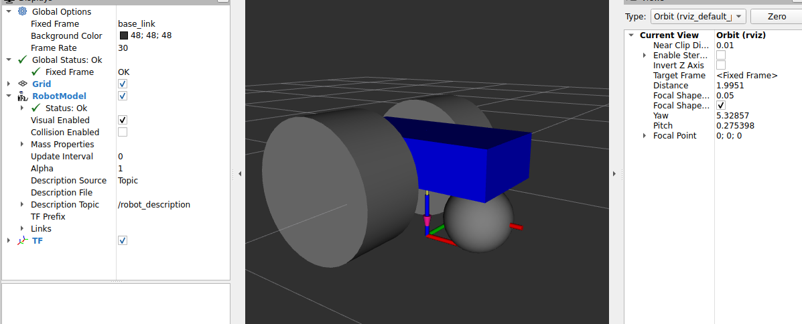

Parametrización del Grosor de las Ruedas
Para concluir exitosamente el dimensionamiento estructural básico de nuestro vehículo, definiremos la última variable clave: wheel_length. Este parámetro representará el ancho o grosor de las ruedas motrices. Esta medida no es meramente estética, ya que al ensanchar una llanta, cilindro ocupará más espacio hacia sus extremos izquierdo o derecho, lo que obligará teóricamente a que el punto de anclaje de nuestro eje deba empujarse un poco más hacia fuera para que la rueda no se incruste rosando el interior de la carrocería chasis.
1. Declaración de la variable wheel_length
Dirígete a la sección global de tu archivo my_car.xacro, y en tu lista ordenada de parámetros donde ya posees tu componente del radio, añádele su contraparte geométrica de grosor asignándole el valor estándar de 0.05 (5 centímetros):
<xacro:property name="wheel_length" value="0.05" />2. Modificación geométrica de las llantas motrices
A continuación, inyectaremos esta variable en el parámetro nativo length del primitivo <cylinder> tanto en nuestra red izquierda como en la derecha. Las mallas de contacto de nuestras ruedas pasarán ahora a quedar 100% definidas en base a propiedades (wheel_radius y wheel_length):
<!-- Sección de Rueda Izquierda -->
<link name="left_wheel_link">
<visual>
<geometry>
<cylinder radius="${wheel_radius}" length="${wheel_length}" />
</geometry>
</visual>
</link>
<!-- Sección de Rueda Derecha -->
<link name="right_wheel_link">
<visual>
<geometry>
<cylinder radius="${wheel_radius}" length="${wheel_length}" />
</geometry>
</visual>
</link>3. Precisión Analítica en los Ejes de Conexión (Joints)
Anteriormente en el momento estipulado dentro de la lección del Base Width habíamos configurado parcialmente las proporciones de los ejes de nuestro robot para que reaccionaran al ancho de la carrocería, sumándole el número base estático de 0.05 como margen teórico equivalente de las ruedas. En aquel entonces la ecuación nos había quedado como: ${-(base_width + 0.05) / 2.0}.
Ahora nuestro diseño URDF es total y bidimensionalmente dinámico. Debemos modificar los anclajes del chasis trasero (base_left_wheel_joint y base_right_wheel_joint) soltando por fin y para siempre ese número estipulado de 0.05, insertando directo allí nuestra variable oficial de calibración cruzada: ${wheel_length}.
El componente ahora lucirá verdaderamente paramétrico, capaz de operar y predecir de forma autónoma, tal y como refleja a continuación:
<joint name="base_right_wheel_joint" type="continuous">
<!-- El eje Y suma de manera completamente integral y variable el factor tanto del ancho del chasis como del ancho de la propia rueda -->
<origin xyz="${-base_length / 4.0} ${-(base_width + wheel_length) / 2.0} 0" rpy="0 0 0" />
<axis xyz="0 1 0" />
</joint>
<!-- Aplica esta fórmula dentro the base_left_wheel_joint, prestando atención a mantener la naturaleza de los signos posicionales que rigen un plano cartesiano opuesto -->
<origin xyz="${-base_length / 4.0} ${(base_width + wheel_length) / 2.0} 0" rpy="0 0 0" />🏆 Conclusión Final: Comprobación Integral del Sistema Parametrizado
¡Felicidades! Has concluido la parametrización de las dimensiones y proporciones integrales mecánicas en tu robot diferencial. Tu modelo URDF ha mutado exitosamente de un mero archivo de texto con datos fijos a un archivo matricial inteligente y auto-ajustable con Xacro.
Para probar la consistencia de tu largo recorrido matemático sin importar los números, desafiamos que realices esta comprobación en tu entorno de RViz2: Dirígete a la parte superior directiva de tu archivo my_car.xacro y distorsiona severamente tus valores. Puedes introducir la configuración de prueba extrema dispuesta a continuación:
<xacro:property name="base_length" value="0.8" />
<xacro:property name="base_width" value="0.4" />
<xacro:property name="base_height" value="0.2" />
<xacro:property name="wheel_radius" value="0.3" />
<xacro:property name="wheel_length" value="0.3" />Guarda tu nuevo código con exageraciones volumétricas y lanza de nuevo el visualizador con el comando.
ros2 launch my_robot_description_car display.launch.xml
¿Cuál tendría que ser nuestro resultado objetivo? Aparecerá en el visualizador la complexión de un modelo que podríamos comparar con la robustez de un “Monster Truck”, siendo notablemente largo, super ensanchado en sus anclajes y de cubiertas masivas. El mayor éxito se resume en la cohesión de esta prueba: A pesar de nuestra reestructuración crítica, ¡El vehículo retiene una interconexión simétrica e íntegra en todos sus cuerpos físicos! Las nuevas llantas de enormes radios logran reposar armónicamente rasantes en la misma proporción calculada de suelo (eje Z: ${wheel_radius}), y sus exagerados ensanchamientos empujaron de forma idéntica su centro focal previniendo colapsos de colisión (eje Y: (base_width + wheel_length) / 2.0).
Se da concluida una de las mejores y más óptimas configuraciones de empaquetado y modulación avanzada orientada para el robot de desarrollo ROS 2.
(No olvides devolver con cuidado tus directivas de medida del robot a los factores normativos de enseñanza indicados al principio de estas lecciones prácticas para poder desarrollar consistencia frente a lecciones venideras que involucren modelos Gazebo u otra capa lógica).